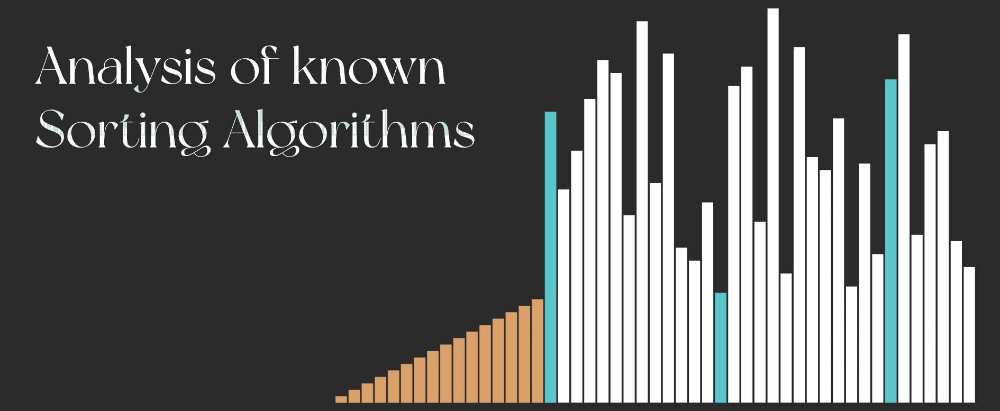
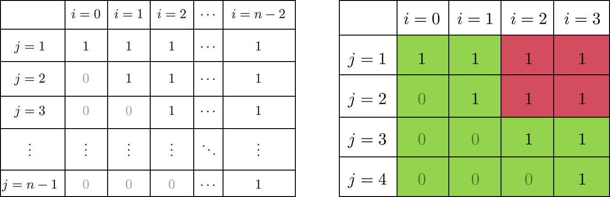

A Needlessly Thorough Analysis of Known Sorting Algorithms

1) Introduction
IntroductionTable of contents
1) Introduction
2) Simple sorting algorithms
$\quad$2.1) Selection sort
$\quad$2.2) Bubble sort
$\quad$2.3) Insertion sort
3) Clever sorting algorithms
$\quad$3.1) Merge sort
$\quad$3.2) Quick sort
$\quad$3.3) Heap sort
$\quad$3.4) Introspective sort (Intro sort)
$\quad$3.5) Shell sort
4) Theoretical limits for comparison-based sorts
2) Simple sorting algorithms
2.1) Selection sort
The simplest sorting algorithm is selection sort, this algorithm starts by finding the smallest value in the array and placing it in the front. Afterwards it will find the smallest value in the array, but this time it will exclude the first value, subsequently finding the second smallest value and placing it in the second slot in the array. Doing this continously will eventually lead to a sorted array.Pseudocode
SelectionSort (A )
for i = 0 to |A | - 2
//This number will denote the index of the smallest element in the array
minIndex = i
for j = i + 1 to |A | - 1
if A [j] < A [minIndex]
minIndex = j
//When we've found the smallest element, we place it on the i'th index
Swap (A , i, minIndex)
return A Time- and spatial complexity
No matter how scrambled the original array was, this algorithm will sort the array in $\frac{n(n-1)}{2}-1\in \Theta(n^2)$ steps (where $n$ is the size of the original array). To see why, note that to find the smallest value we first have to check $n$ elements, then to find the next smallest value we check the remaining $n-1$ elements and so on \[ (n-1)+(n-2)+\cdots+3+2=\sum_{i=2}^{n-1} i=\sum_{i=1}^{n-1} i-1=\frac{n(n-1)}{2}-1\in\Theta (n^2) \] We could also look at it a different way, using upper and lower bounds, let $f(n)$ be the number of operations performed by SelectionSort for an array of size $n$. The following diagram indicates the amount of work performed by our algorithm according to the value of $i$ and $j$. Wether or not the if statement meets is condition is the difference between 1 operation and 2, so its up to a constant and can be dismissed.
Figure 1: On the left: number of operations performed by insertion sort per index $i$ and $j$.
On the right: operations performed by insertion sort for an array of size 5.
Now in terms of spatial complexity we create only a variable
minIndex
and a temporary variable for swapping elements, so in total two variables, which
makes the spatial complexity constant $\Theta(1)$.
Proof of correctness
Let $\mathbf A =\left< a_0,a_1,\cdots,a_{n-1}\right>$ be a list of $n$ elements. This method of proof uses an $invariant$. This invariant is the following: $\forall k< i,\forall l\geq i: a_k\leq a_l$ - in words: all elements to the right of $a_{i-1}$ are larger than or equal to all elements to the left of $a_i$.Base case:
This holds trivially for $i=0$, since there is no $j< i$.
Maintenance:
For every loop with respect to $i$, $j$ will go through all elements of $\mathbf A$ to the right of $i-1$ and keep track of the smallest one. If the smallest element is found to be $a_m$ then $a_i$ and $a_m$ swap places. Recall that $a_m$ was smaller than or equal to all elements to the right of $i-1$, thus since our invariant holds for $i-1$ it holds also for $i$.
Termination:
Once $i=n-1$ we get that the element at $n-1$ is the largest and that all elements to the left of $n-1$ are in sorted order (since $a_j$ $\forall j< i$ is smaller than any element to the right of it - by our invariant)
2.2) Bubble sort
2.3) Insertion sort
3) Clever sorting algorithms
3.1) Merge sort
3.2) Quick sort
3.3) Heap sort
3.4) Introspective sort (Intro sort)
3.5) Shell sort
4) Theoretical limits for comparison-based sorts
Assume we have an array $\mathbf A=\left< a_0,a_1,\cdots a_{n-1}\right>$ of $n$ distinct elements, there are exactly $n!$ different permutations of this array and only one of these permutations is the sorted array, so our algorithm will have to distinguish between all $n!$ permutations to find the right one. Comparison based algorithms do this by comparing elements, to ensure that smaller elements are to the left of larger elements.A sorting algorithm might start by comparing the first two elements: $a_0< a_1$, if this inequality holds then the first two elements are in sorted order, if not they are in reverse sorted order, no matter what happens we can eliminate half of all possibilites. Assume that $a_0 < a_1$ then all permutations containing with $\mathbf A=\left< \cdots, a_1, \cdots, a_0,\cdots\right>$ (that is, having $a_1$ before $a_0$) can instantly be discarded. This accounts for half of all permutations, and thus after just one step we go from $n!$ permutations to check down to $n!/2$ (note that $a_0$ and $a_1$ are not unique, you could compare any two indices $0\leq i, j < n,i\neq j$, $a_i< a_j$ in the same way we can show that the argument of halving the permutations also holds whenever the inequality $a_i< a_j$ does not. Since this is just the case of $j< i$).
Now we compare the next elements $a_1< a_2$ and again let's assume that this inequality holds, then we can cut away all permutations containing $\mathbf A=\left< \cdots, a_2, \cdots, a_1,\cdots\right>$ which again halves the number of permutations we have to check: $n!/4$. We can keep going until we know the exact permutation that sorts the array (i.e, until $n!/2^k\leq 1$). \begin{equation}\label{f n geq n fac} \begin{split} 1\geq \frac{n!}{2^{f(n)}}\\ 2^{f(n)}\geq n!\\ f(n)\geq \log_2 (n!) \end{split} \end{equation} where $f(n)$ is the number of steps our theoretical sorting algorithm has to perform. If we expand out $\log_2(n!)$ we have for even values of $n$: \begin{equation}\label{log2 n factorial} \begin{split} \log_2(n!)=\log_2(1)+\log_2(2)+\cdots+\underbrace{\log_2([n+1]/2)+\cdots+\log_2(n)}_{n/2\text{ terms}}\\ \underbrace{\log_2([n+1]/2)+\cdots+\log_2(n)}_{n/2\text{ terms}}\geq \underbrace{\log_2(n/2)+\cdots+\log_2(n/2)}_{n/2\text{ terms}}\\ =\frac{n}{2}\log_2{(n/2)}=\Theta(n\log n) \end{split} \end{equation} for odd values of $n$ we recall that this is a lower bound, so use $\log_2(n!)\geq \log_2((n-1)!)=\Theta(n\log n)$.
Now combine (\ref{f n geq n fac}) with (\ref{log2 n factorial}) and we've succesfully arrived at the theoretical limit of the time complexity of sorting algorithms is $f(n)=\Omega(n\log n)$. By the existance of algorithms like MergeSort we know that this theoretical limit is also achievable.